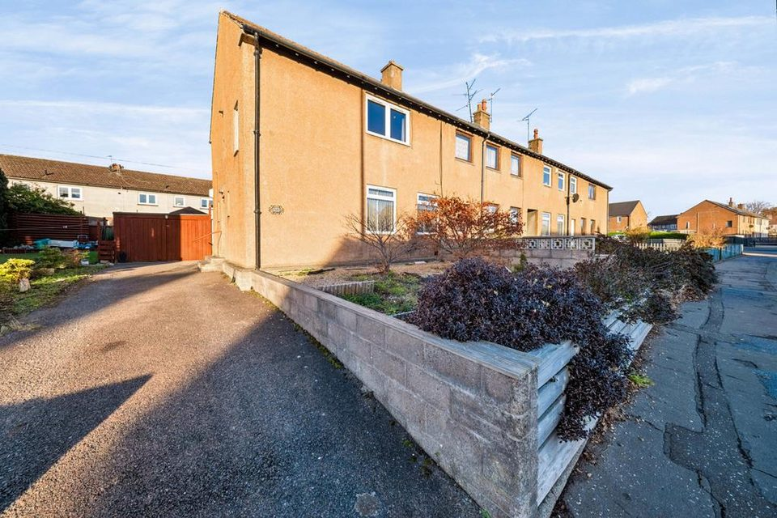
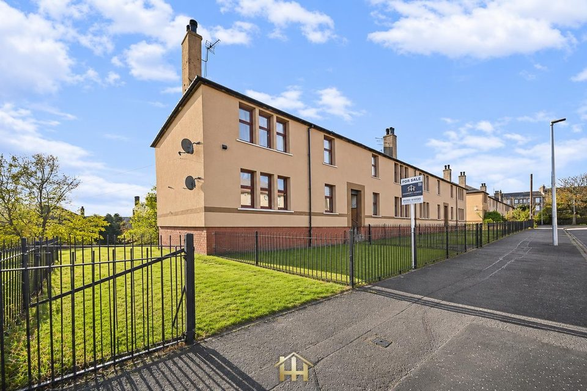
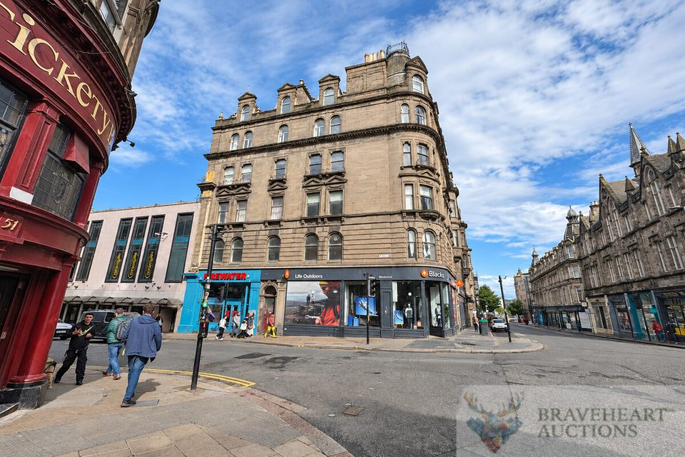
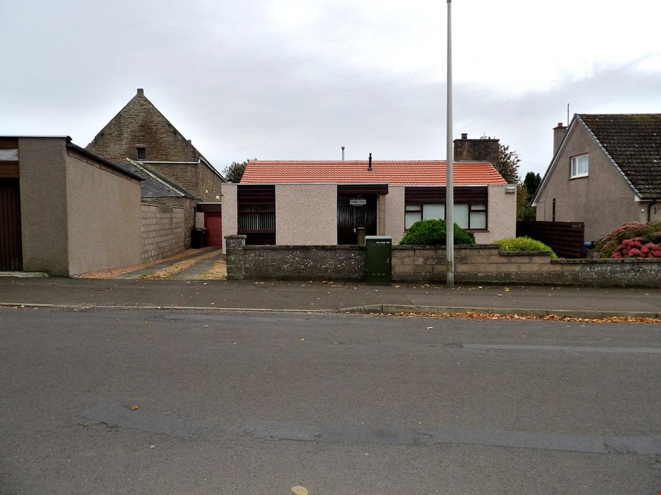
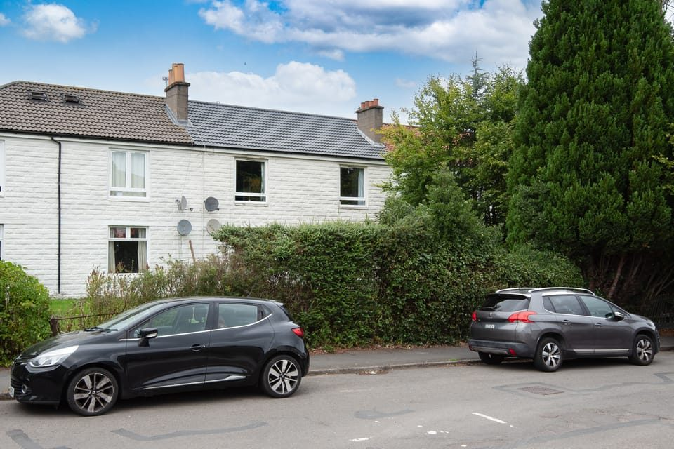
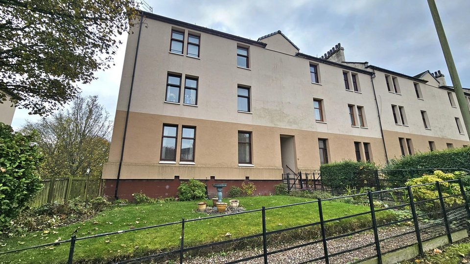

Mid-terrace house3 bedrooms

£145,000Offers over
38 Brackens Road, Dundee
Area to confirm
Approx. 2.2 miles · 45 min walk from Tip Top
Listed 20 November 2026 · Verdala
Modernisation would be beneficial.
Daily property watch
Homes for sale · 2–3 bedrooms · Up to £270,000
Updated 21 November 2026 · 1 new · 1 price change · 236 in the archive
Area to confirm
Approx. 2.2 miles · 45 min walk from Tip Top
Listed 20 November 2026 · Verdala
Modernisation would be beneficial.

Hilltown
Walking distance unavailable
Listed 11 November 2026 · Thorntons Property
Previously reported · Price changed from £80,000 to £94,500

Area to confirm
Approx. 1.2 miles · 24 min walk from Tip Top
Listed 19 November 2026 · McIntyre Properties

Area to confirm
Approx. 2.2 miles · 42 min walk from Tip Top
Listed 19 November 2026 · McIntyre Properties

Area to confirm
Approx. 1.1 miles · 23 min walk from Tip Top
Listed 19 November 2026 · Northwood Dundee

Area to confirm
Approx. 0.2 miles · 4 min walk from Tip Top
Listed 19 November 2026 · Harmony Homes

Area to confirm
Approx. 0.6 miles · 12 min walk from Tip Top
First seen 24 October 2026; listing date unavailable · Gilson Gray
Previously reported · Price changed from £149,995 to £145,000
Original agent page unavailable; portal listing linked.

Area to confirm
Walking distance unavailable
First seen 20 November 2026; listing date unavailable · Thorntons

Hilltown
Walking distance unavailable
First seen 20 November 2026; listing date unavailable · Thorntons
Sold with tenant in situ.

West End
Approx. 1.6 miles · 31 min walk from Tip Top
Listed 18 November 2026 · Slater Hogg & Howison
Original agent page unavailable; portal listing linked.

Area to confirm
Approx. 0.7 miles · 13 min walk from Tip Top
Listed 18 November 2026 · Tula Property

City Centre
Walking distance unavailable
Listed 17 November 2026 · Braveheart Auctions
Auction scheduled for 25 November 2026. Auctioneer terms state a 3% buyer administration fee with a £3,000 minimum plus VAT. The flat would benefit from refurbishment.

Balgillo
Approx. 4.9 miles · 93 min walk from Tip Top
Listed 24 September 2026 · Smart Sales & Investments
Previously reported · Price changed from £185,000 to £188,000

West End
Approx. 2.6 miles · 53 min walk from Tip Top
First seen 19 November 2026; listing date unavailable · J Myles & Co
Original agent page unavailable; portal listing linked.

Central Broughty Ferry
Walking distance unavailable
First seen 19 November 2026; listing date unavailable · Thorntons

Broughty Ferry
Approx. 5.0 miles · 94 min walk from Tip Top
First seen 7 October 2026; listing date unavailable · Slater Hogg & Howison
Original agent page unavailable; portal listing linked.

Area to confirm
Approx. 2.6 miles · 50 min walk from Tip Top
First seen 19 November 2026; listing date unavailable · Lindsays

Area to confirm
Approx. 2.9 miles · 56 min walk from Tip Top
First seen 19 November 2026; listing date unavailable · Lindsays

Balgay
Approx. 1.7 miles · 35 min walk from Tip Top
First seen 19 September 2026; listing date unavailable · Thorntons Property
Previously reported · Price changed from £120,000 to £112,000

Area to confirm
Walking distance unavailable
Listed 17 November 2026 · Campbell Boath